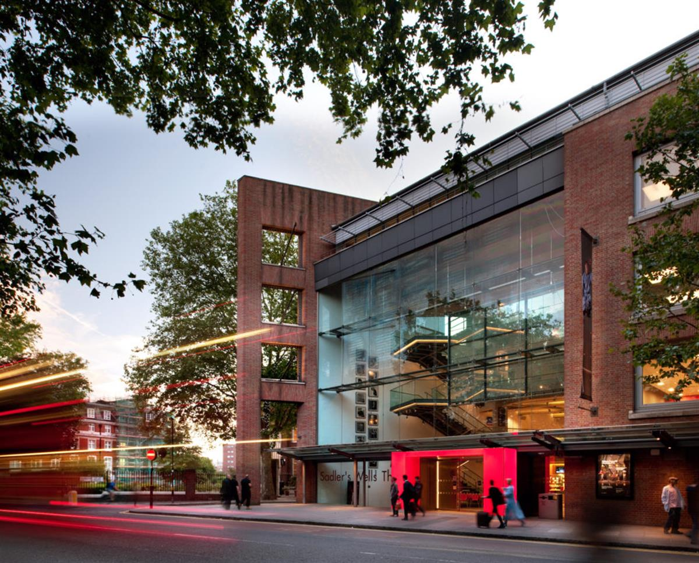

The Serpentine Gallery in London. Courtesy of the Serpentine Galleries.
The Serpentine Galleries Joins 30 British Cultural Institutions in a Pledge to Reduce Their Carbon Footprints
Arts Council England is rolling out its new environmental program called Spotlight.
Sarah Cascone, June 25, 2019
Thirty cultural institutions across the UK are pledging to reduce their carbon footprints, ideally by 2023, as part of a new program from Arts Council England called Spotlight.
The Arts Council asked the 40 biggest pollution generators in its national portfolio of 828 institutions to take part in a workshop for Spotlight, a new program run by the environmental charity Julie’s Bicycle. Among these so-called “big energy users” are the Serpentine Galleries, the National Theatre, and the Royal Opera House, which have all agreed to participate in the program.There initial Spotlight run has spots for 30 organizations, who signed up on a first-come, first served basis, but the council hopes to expand the program in the future.
Spotlight aims to reduce collective emissions among institutions by 10 to 20 percent. Currently, a small number of organizations accounts for half of all emissions across the portfolio. The program calls on organizations to become “resilient and prepared for necessary changes in the energy system” and to set “ambitious but achievable” targets for creating more sustainable infrastructures by 2023, according to Arts Professional.
The group of institutions, known as the National Portfolio Organizations, are selected by the Arts Council every four years to receive public funding of £71.3 million ($90.7 million) in lottery money. There will be no financial penalty for institutions that do not meet the environmental targets. For its part, Opera North aims to become carbon neutral by 2050 and introduce a carbon literacy program for staff.

Sadler’s Wells exterior. Photo ©Sadler’s Wells.Since 2012, National Portfolio Organizations have been required to monitor their carbon emissions, an effort that has resulted in a five percent decrease in annual emissions, and a savings of £16.5 million ($21 million). But where emissions were previously monitored on a monthly or annual basis, a new online tool from Julie’s Bicycle will provide readings every half hour.
This new data will allow institutions to better understand how various factors, such as visitor numbers, times of day, and different exhibitions or programming, are impacting emissions, and then to adjust accordingly.
Here are Spotlight’s participating institutions:
BALTIC Centre for Contemporary
Birmingham Museums Trust
Bristol Museums
Curve Theatre
Glyndebourne
HOME Manchester
Leeds Museums
National Theatre
Northern Stage
Nottingham Playhouse
Opera North
Royal Exchange Theatre
Royal Liverpool Philharmonic
Royal Opera House
Royal Shakespeare Company
Sadler’s Wells
Sage Gateshead
Serpentine Galleries
Sheffield Theatres
Southbank Centre
The Lyric Hammersmith
Theatre Royal Plymouth
Theatre Royal Stratford East
Tullie House Museum and Art Gallery
Tyne & Wear Archives & Museums
Unicorn Theatre
University of Oxford Museums
Whitechapel Gallery
Whitworth Art Gallery
Young Vic Company
SOURCE: ARTNET NEWS